图2-3
一个数的平方根与“平方”相反。
■“16的平方根”是指一个乘以自己等于16的数。
答：4或（-4）。
■平方根符号被称为根号。平方根里的数目被称为被开方数。
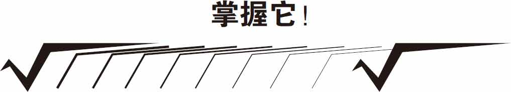
“16的平方根”＝4或（-4），因为4×4＝16，（-4）×（-4）＝16。
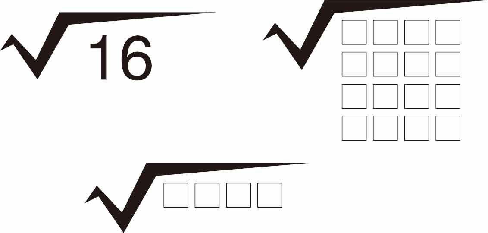
注：一个根号符号表示一个平方根。
它是符号的缩写，它的左上角省略了一个小的2，意思是“平方根”的数字。
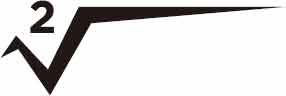
如果我们想要“立方根”的一个数，我们会在左上角放一个小3。
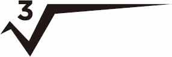
你可以用日常的工具来练习幂和平方根的计算。
需要准备的东西：
►纸板
►回形针或黄铜纸扣
►CD或DVD或罗盘
►剪刀
►纸
►铅笔
►透明胶带
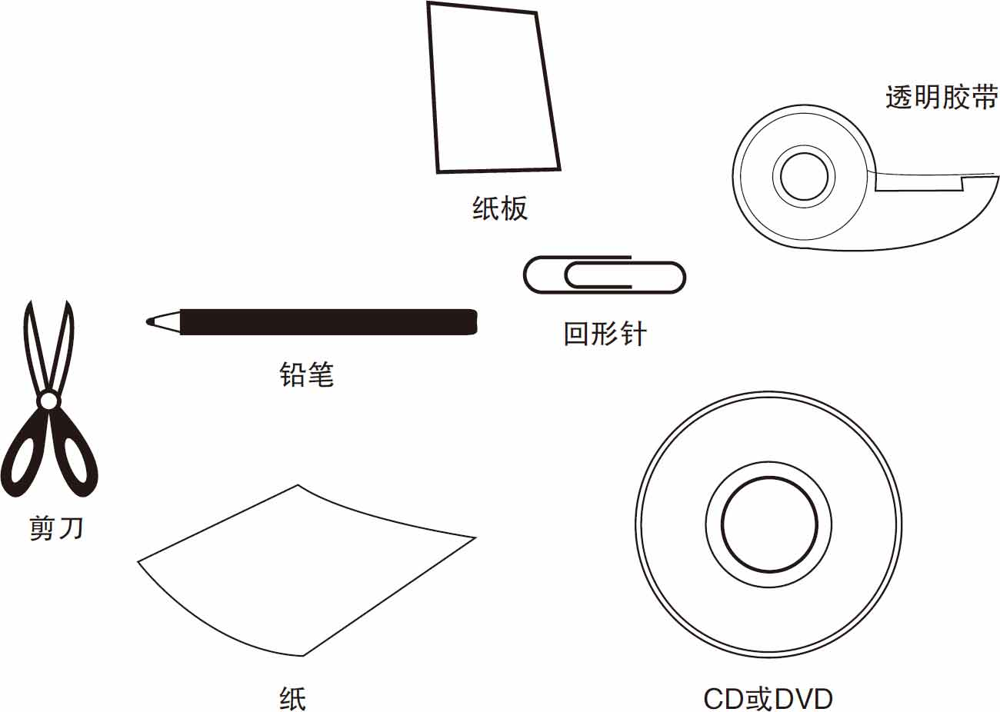
你可以使用下一页的插图作为实验参考，并按步骤操作。
首先，用纸板制作一张CD或DVD大小的圆盘，或者用罗盘来制作直径为3厘米的圆盘，如图2-1所示。
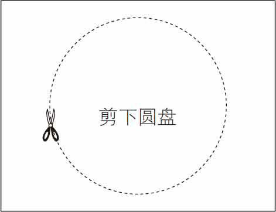
图2-1
接下来，剪出如图2-2所示的矩形纸盖子，包括“窗口”孔。或者，你可以用铅笔画虚线，准确地沿着虚线剪开窗口的部分。
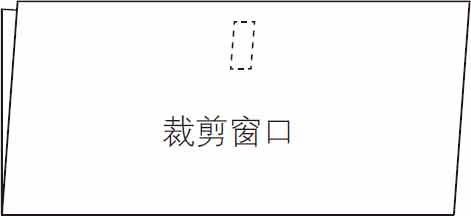
图2-2
把盖子对折，在窗口下方打一个孔，见图2-3。在圆盘的中心也打一个孔，如图2-4所示。
图2-3
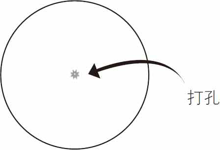
图2-4
如图2-5所示，将圆盘放入外盖中，并小心地将外盖上的黄铜纸扣或回形针的固定夹推入并穿过圆盘的孔洞。
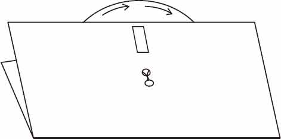
图2-5
拨盘选择方程然后通过窗口查看答案，见图2-6。
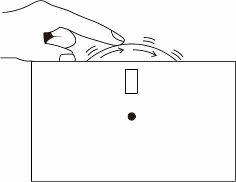
图2-6
下图是实验的一个举例说明。
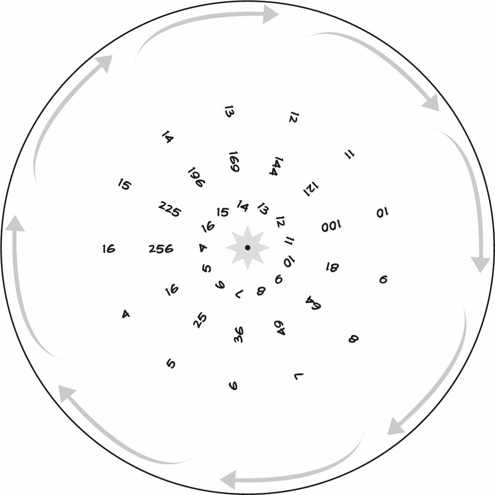
指数标示在数字或变量的右上角，表示数或变量乘以自身一定次数。
42 就是4的2次幂
请参见这个图形示例：

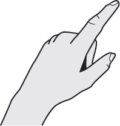
转动刻度盘，测试你的幂和平方根计算能力。
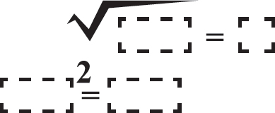
沿虚线切割。
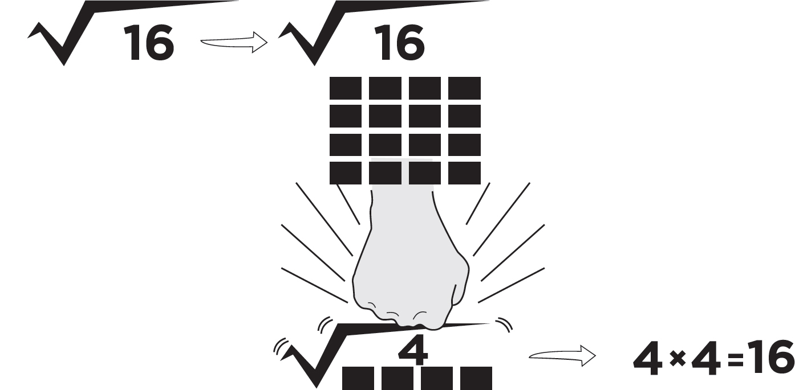
一个数的平方根是相反的“平方”。
意思是：“哪个数字乘以它自己等于16？”